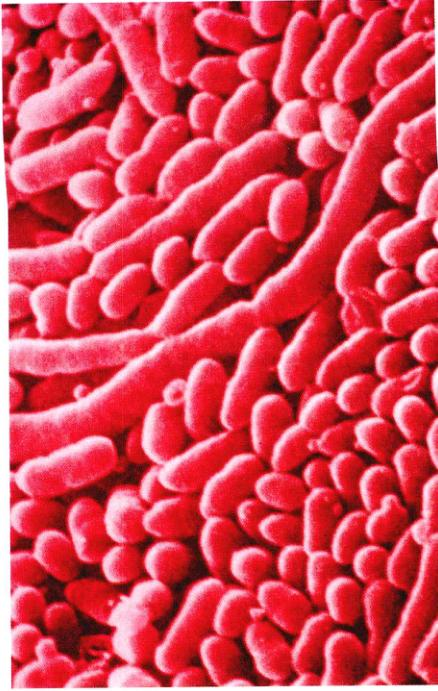
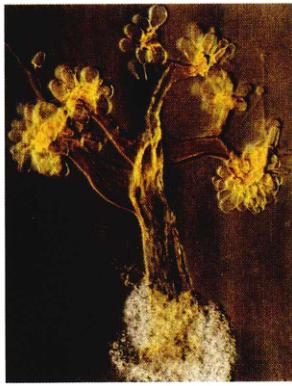
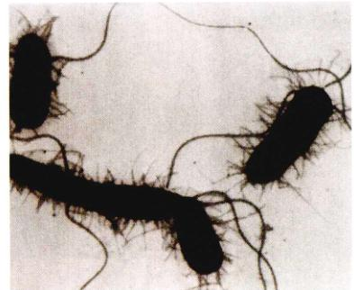
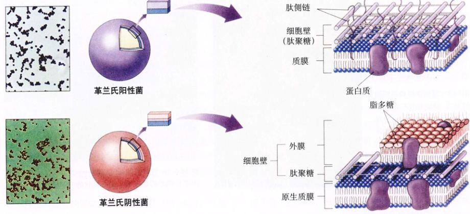
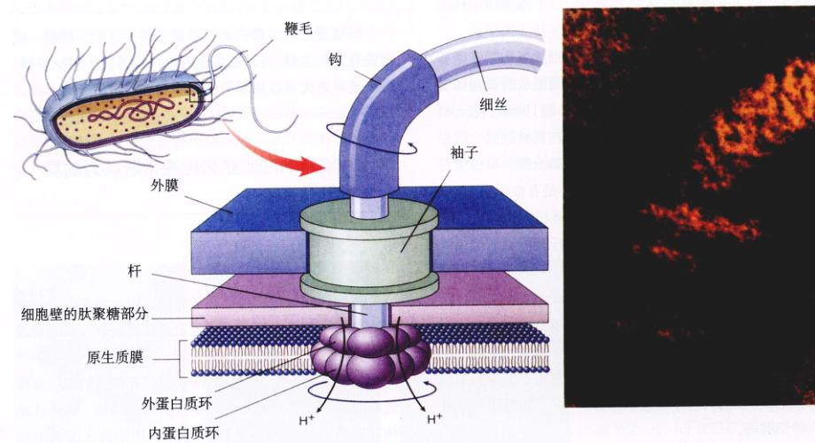
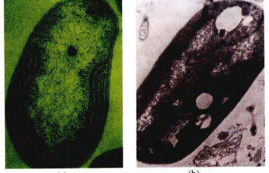
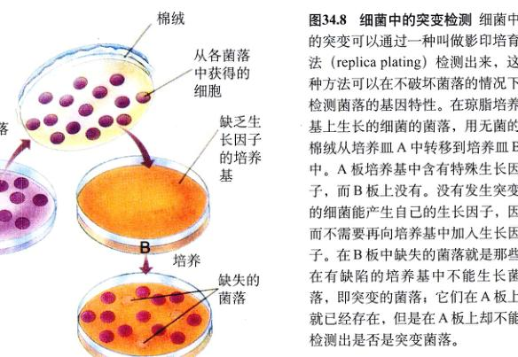
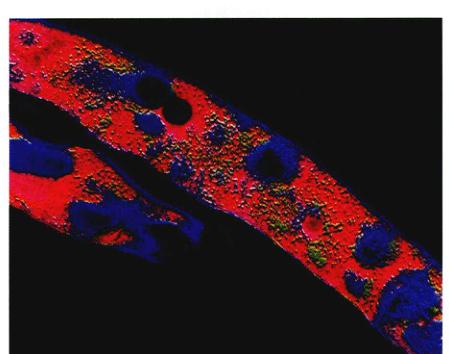
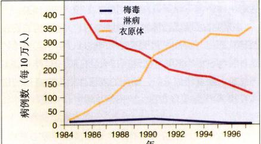
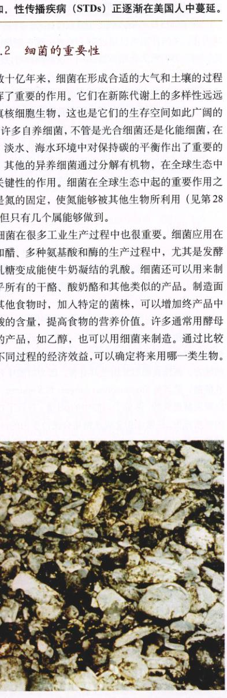

Page 1 / 原始页码 653
第34章 细菌

图 34.1 细菌菌落 由于具有巨大的适应性和新陈代谢的多样性，在地球上的任一个角落都可以找到细菌的踪迹。细菌参与了生态系统中许多关键过程，包括光合作用、氮的固定和有机物的分解。
目前地球上生存的最简单的生物是细菌，生物学家们认为它们与出现在地球上的最早的生物非常相像。细菌小到用肉眼不能看见，但却是地球上数目最多的生物（图 34.1），也是唯一的原核细胞生物。如果没有细菌，地球上就不会有生命。那是因为细菌在生态系统中起着数种极其重要的作用，包括从大气中捕获氮原子，分解有机物质，还在许多水生群落中担负光合作用的任务。实际上，细菌的光合作用被认为是地球现有大气中氧气的主要来源。对细菌的不断研究也加深了人们对遗传学、生态学和疾病的认识。由此说来，对细菌的了解是必不可少的。
Page 2 / 原始页码 654
34.1 细菌是体积最小、数量最多的生物
34.1.1 无处不在的细菌
细菌是地球上最古老、结构最简单、生命形式最丰富的生物体。细菌也是唯一的原核细胞生物。从发现细菌化石的最古老（35亿 ~ 38亿年）的岩层推断，细菌比真核生物早出现20亿年（图 4.11）。早期的光合细菌（蓝细菌）产生出大量氧气，改变了地球大气的成分，这导致了细菌和真核细胞生物的多样性。细菌在能量循环和物质循环两方面都发挥着重要的作用，对其他生命形式来说也是至关重要的。细菌还是地球上惟一能固定大气中氮的生物。
目前人类大约鉴定了5000种细菌（图 34.2），但毫无疑问还有更多的细菌尚未为人知。在任何一个地方，微生物学家都能发现新的物种，有些情况甚至能够改变我们看待细菌的眼光。20世纪70年代到80年代，对一种新的细菌的分析最终导致人们认识了一种新的原核细胞生物，即古细菌。不同细菌之间的结构上的差异并不像其他生物显现的那样大，甚至用电子显微镜观察也是如此。因为细菌结构上的差异比较小，所以人们往往通过细菌新陈代谢和遗传上的特点来对细菌进行分类。只有在确定的培养基中，细菌才能进行正确的定性，这是因为细菌生态环境改变，细菌的特征往往会发生变化。
细菌在地球上随处可见，所有真核细胞生存的地方都有它们的踪迹。在许多其他的生命形式不能生存的极端环境下，也能发现细菌。细菌可以生活在其他生物会被煮熟的热泉和能使其他生物细胞脱水的高盐环境以及能杀害其他生命的富含甲烷或硫化氢有毒气体的空气中。这些苛刻的环境可能与生命刚刚出现时的原始地球的环境相似，所以细菌可以在这样苛刻的环境中生存，甚至在地球上发生天翻地覆的变化后仍然保持有惊人的适应能力。
1) 细菌的形态
细菌通常形态简单，表现为以下三种形态之一：杆状菌 (bacillus, 复数 bacilli)、球状菌 (coccus, 复数 cocci)、螺旋菌 (spirlla)。螺旋菌一般不与其他细胞联系，在环境中单独游动。螺旋菌的细胞膜内有一个复杂的结构，可以使它们螺旋状的躯体转动，从而把它们向前推进。有些杆状菌和球状菌在细胞分裂后头尾相接成链，形成菌落（图 34.2）。有些细菌的菌落形成片状结构，不断生长形成有分枝的细丝，或形成直立的释放孢子的结构。孢子是单细胞的，可以发育及新的细菌个体。有些丝状细菌可以一边滑动，一边绕着细胞的轴线转动。生物学家到现在还没有搞清楚这些细菌运动的机制。
2) 原核生物和真核生物的比较
原核生物——真细菌和古细菌——的许多重要特征都与真核生物不同。这些差异代表了区分各生物类群的某些基本的特征。
(1) 多细胞性：所有的原核生物都是单细胞。原核细胞中的有些种类，单个的细胞在基质内相互黏附在一起，形成细丝，但是每个细胞仍然保持着各自的独立性。细菌细胞尤其容易形成细菌集合体，但它们的胞质并不像多细胞真核生物那样直接连接在一起。论活动的整体性和协调性，细菌集合体也比不上多细胞的真核细胞生物。滑行细菌 (gliding bacteria) 是一种比较原始的形式，它们一同移动并且形成产生孢子的结构的图（图 34.3）。这种协同的多细胞形式在细菌中比较少见。

图 34.2 细菌的多样性 (a) 绿脓杆菌 (Pseudomonas aeruginosa) 是一种杆状的、有鞭毛的细菌（杆菌）。假单胞菌 (Pseudomonas) 包括很多能够引起严重植物病的细菌。(b) 链球菌 (Streptococcus)。这种球形细菌（球菌）相互连接呈链状 (34 000×)，是该属的成员之一。(c) 迂回螺菌 (Spirillum volutans) 是一种螺旋菌。这种大型细菌分布在停滞的淡水中，细菌的两端各有一簇鞭毛 (500×)。
Page 3 / 原始页码 655

图 34.3 细菌形成多细胞胞的方式 藏红花粘杆黏细菌 (Chondromyces crocatus) 是一种滑行细菌。杆状的个体一起移动，形成图中所示的产生孢子的复合结构，从这种结构中释放成千上万的孢子，即单个的细菌。

图 34.4 一种常见的肠道细菌——大肠杆菌的鞭毛 图中长线形的是鞭毛，短头发状的突起是菌毛。
(2) 细胞的大小：随着发现的细菌种类越来越多，我们发现原核生物的细胞大小变化悬殊，甚至能达到5个数量级。大部分原核细胞的直径只有 1 μm 或更小，而大部分真核细胞的直径远远不止原核细胞直径的10倍。
(3) 染色体：真核细胞有一个膜包裹的核，其中包括含由 DNA 和蛋白质组成的染色体。细菌没有膜包裹的核，也没有像真核细胞那样的由 DNA 和蛋白质形成的复杂染色体。它们裸露的 DNA 呈环状，位于细胞质中称为类核 (nucleoid) 的区域内。
(4) 细胞分裂和基因重组：真核细胞生物的细胞分裂是通过有丝分裂完成的，并与由微管组成的纺锤体有关。细菌的细胞分裂主要是通过二分裂 (binary fission) 完成的（第11章）。真正的有性生殖只在真核细胞生物中发生，包含配子结合 (syngamy) 和减数分裂，单倍体形式和多倍体形式交替出现。虽然细菌不是有性生殖，但细菌也有进行遗传物质传递的机制。这些机制当然没有真核细胞生物的机制那么规律，而且进行遗传物质传递的不同个体之间也不对等参与的。
(5) 内部区域化 (internal compartmentalization)：在真核细胞中，细胞呼吸作用的酶是包裹在线粒体中的；而在细菌中，相应的酶却没有单独地分开，而是定位在细胞膜上（见第5章和第9章）。细菌的细胞质不像真核细胞的细胞质，没有内部分区或细胞骨架，除了核糖体外没有别的细胞器。
(6) 鞭毛 (flagella)：细菌鞭毛的结构简单，只包含一根鞭毛蛋白 (flagellin) 纤维（图 34.4，又见第5章）。真核细胞的鞭毛和纤毛 (cilia) 就要复杂一些，具有 9+2 的微管结构（图 5.27）。细菌鞭毛的功能也不同，只能像螺旋桨那样旋转，而真核细菌的鞭毛能像鞭子那样摆动。
(7) 代谢的多样性：真核细胞生物只有一种形式的光合作用，结果是释放氧气。细菌有数种不同的形式来进行厌氧的或是好氧的光合作用，最终的产物可能是硫磺、硫酸盐或是氧气（第10章）。原核细胞还可以进行化能合成，利用无机分子化学键的能量来合成碳水化合物；真核细胞生物就没有这一代谢能力。
34.2 细菌的细胞结构比通常所认为的要复杂得多
34.2.1 细菌的表面
细菌的细胞壁是个重要的结构，因为它不仅维持着细胞的性状，还保护细胞不至于膨胀或破裂。细胞壁是由肽聚糖 (peptidoglycan) 组成，肽聚糖是一种由多糖分子通过肽键连接而形成的网状物。有些细菌的表面覆盖着由肽聚糖形成的致密而复杂的网状结构，该网状结构同时还与肽链相互交联。另外一些细菌表面有类似“三明治”一样的结构，两层质膜之间夹了一层很薄的肽聚糖，外膜 (outer membrane) 含有脂多糖 (lipopolysaccharide) 大分子，这是一些连接了多糖链的脂质分子。这两类细菌可以用一种叫做革兰氏染色 (Gram stain) 的着色过程区分开来。
Page 4 / 原始页码 656

图 34.5 革兰氏染色法 革兰氏阳性菌的肽聚糖层能与晶体型紫罗兰色染料结合，使细菌在革兰氏染色剂中呈紫色（Hans Christian Gram 命名，是他发展了这个技术），而革兰氏阴性菌由于所含的肽聚糖（处在质膜和一层外膜之间）很少，不能固定晶体型染料，而显示出红色的背景色（通常是番红染料）。

图 34.6 革兰氏阴性菌的鞭毛“发动机” 一个由鞭毛蛋白组成的蛋白丝连接到一个蛋白轴上，该轴依次穿过外膜上的“衣袖”，细胞壁的肽聚糖部分，与连接在细胞壁和质膜上的蛋白质环相连。该蛋白质环似带球的环，当内蛋白环随着固定在细胞壁上的外蛋白质环旋转时，轴也开始旋转。内蛋白环是个 H⁺ 通道，即质子泵，它可以利用质子进入细胞时所释放的能量来推动内环相对于外环转动。
Page 5 / 原始页码 657
革兰氏阳性菌有较厚的肽聚糖层，革兰染色呈紫色（图 34.5）；而更常见的革兰氏阴性菌的肽聚糖较少，不能染成紫色，而是红色。外膜的存在使革兰氏阴性菌对许多干扰细菌细胞壁合成的抗生素都有抵抗作用。在有些细菌中，细胞壁的外面还有一层胶质层，叫做细菌荚膜 (capsule)。
许多种类的细菌有细长的、坚硬的、螺旋状的鞭毛 (flagellum)，鞭毛中含有鞭毛蛋白（图 34.6）。这些鞭毛长 3 ~ 12 μm，粗 10 ~ 20 nm。鞭毛固定在细胞壁上，可以不停地旋转，像轮船上的浆一样推动细菌在水中游动。
菌毛 (pili, 单数 pilus) 是存在于某些细菌上的另外一种像头发一样的结构（图 34.4）。它们比鞭毛短，最多只有几微米长，有 7.5 ~ 10 nm 那么粗。菌毛可以帮助细菌固定在适合的物体上，还可以交换遗传信息。
有些细菌在营养状况不好的情况下可以在染色体周围形成厚壁的内生孢子 (endospore)，这是围绕细菌胞质的一小部分。这些内生孢子的生命力很强，能对抗恶劣环境，尤其是热的环境。数十年甚至是几个世纪之后，内生孢子又能发育成新的个体。
34.2.2 细胞内部
细菌细胞最重要的特征就是它是原核细胞，缺少像真核细胞那样广泛存在的胞内功能分区。
(1) 内膜 (internal membrane)：许多的细菌有内陷的质膜，可以在进行呼吸作用或光合作用的时候发挥作用（图 34.7）。
(2) 核区 (nucleoid region)：细菌没有细胞核，也没有真核细胞那样的复杂的染色体。它们的基因编码在一个双链的 DNA 环上，这个 DNA 环填充在细菌中一个明显的区域，这个区域叫做核区 (nucleoid region)。许多细菌还有小的、可以独立复制的 DNA 环，叫做质粒 (plasmid)。质粒只包含很少的几个基因，对于细菌不起决定性的作用。它们被认为是细菌染色体上切下的一部分。
(3) 核糖体：细菌的核糖体比真核细胞的小，而且所含的蛋白质和 RNA 也不同。像四环素或是氯霉素那样的抗生素可以分辨出其中的不同——它们能结合到细菌的核糖体上，阻碍蛋白质合成，但不能结合到真核细胞的核糖体上去。

图 34.7 细菌细胞通常具有复杂的内膜 这个蓝氧细菌 (a) 的细胞质中分布有广泛的呼吸膜，这些膜和线粒体中的不一样。这个蓝细菌 (b) 有像类囊体那样的膜，是进行光合作用的场所。
34.3 细菌在结构和新陈代谢方面都显示出相当大的多样性
34.3.1 细菌的多样性
如果仅依据形态特征，很难对细菌进行分类。与其他生物的分类相比，直到最近我们对细菌的生化和新陈代谢的特征有了足够的了解之后，才找到同一个同样适用于其他生物的细菌分类方法。早期的细菌分类系统依赖于不同的染色方法，例如革兰氏染色法。用于细菌分类的主要特征有：(1) 光合作用和非光合作用；(2) 能运动的和不能运动的；(3) 单细胞和多细胞；(4) 孢子的形成或是横二分裂。
随着遗传学和分子生物学方法的发展，细菌的分类将最终反映正确的遗传关系。分子研究的方法包括：① 关键蛋白质氨基酸序列的分析；② 通过测定鸟嘌呤和胞嘧啶的含量（物种在进化上的关系越接近，能够耦合的碱基数量就越多）；③ 核酸的杂交分析，把不同物种的 DNA 单链混合在一起，并测定能够耦合的碱基数量（物种在进化上的关系越接近，能够耦合的碱基数量就越多）；④ 核酸序列测定，尤其是核糖体 RNA。Lynn Margulis 和 Karlene Schwartz 根据细菌最突出的特征，提出了一个分类系统，把细菌分为16个门。表 34.1 概述了某些门的主要特点。
1) 细菌的种类
尽管细菌在结构上缺乏像真核生物那样的复杂性，但它们有各种内部化学特性，能完成新陈代谢过程和一...
Page 6 / 原始页码 658
表 34.1 细菌的主要特征
| 主要类群 |
典型代表 |
主要特征 |
| 古细菌 |
产烷生物
嗜热生物
嗜盐生物 |
古细菌
是一类不属于真细菌界的细菌。大部分是厌氧细菌，具有不寻常的细胞壁。有些细菌产甲烷，另外有些菌还还原硫。 |
| 放线菌纲 |
链霉菌
放线菌 |
真细菌
革兰氏阳性菌。形成有分枝的菌丝，产生孢子。经常被错认为是真菌。能够生产许多常用的抗生素，包括链霉素和四环素。是土壤中常见类型之一，也是牙菌斑中的常见细菌。 |
| 化能自养菌 |
硫细菌
硝化细菌
亚硝化单胞菌 |
可以从无机物中获取所需的能量。通过还原 H₂S、NH₃ 和 CH₄ 获取化学能，并在氮的循环中起着关键作用。 |
| 蓝细菌（蓝藻） |
项圈藻
念珠藻 |
海洋和淡水环境中常见的一种光合细菌，深色，形成污染水的“水花”。 |
| 肠细菌 |
大肠杆菌
沙门氏菌
弧菌 |
革兰氏阴性菌，棒状。不形成孢子。一般是需氧异养菌；能导致许多重要的疾病，包括黑死病和霍乱。 |
| 滑行细菌和芽生细菌 |
黏细菌 |
革兰氏阴性菌，通过分泌黏性的多糖显示具有滑动性，大量细胞在其上滑行。有些类群能形成竖立的带有孢子的结构，这种结构叫微果体。 |
| 假单胞菌 |
假单胞菌 |
革兰氏阴性异养菌，棒状，顶端有鞭毛。在土壤细菌中非常常见，包含很多植物病原菌。 |
| 立克次氏体和衣原体 |
立克次氏体
衣原体 |
小的革兰氏阴性菌，细胞内寄生。立克次氏体的生活史与哺乳动物和节肢动物（如跳蚤、壁虱）有关。立克次氏体与许多能致命的疾病都有关联，包括斑疹伤寒症和洛基山斑疹热。
衣原体感染是常见的性传播疾病之一。 |
| 螺旋菌 |
密螺旋体菌 |
长形螺旋状细胞，水生。一种寄生的种类能够导致梅毒。 |
Page 7 / 原始页码 659
些独特的功能。细菌能够适应许多不同的环境，其中有些被认为是很严酷的环境。它们已经成功地侵入了盐度非常高的水中，在高酸、高碱、高温、高寒地带也“生活”得不错。在温度超过 78℃ 的温泉和南极洲深达 435m 的冰下，也发现了细菌的踪迹。
我们对细菌的了解大部分来自于实验室的研究。我们只能研究那些能在实验室被培养的细菌，了解这一局限性是非常重要的。野外研究表明，这只代表了很小一部分生活在土壤中的细菌，而大部分细菌用现有的技术是不能培养的。因此，我们充其量只了解细菌多样性的皮毛。
正如我们在第32章学到的，细菌在生命演化的早期就分裂为两支了，它们之间的结构和代谢上的差异不比它们各自与真核细胞生物之间的差别小。它们之间的差异是根本的，因此生物学家们把它们分别归入不同的域。其中，古细菌域 (Archaea) 由古细菌组成。古细菌意为“古老的细菌”——尽管这种细菌实际上并不如其他域中的细菌那样古老。曾经有人认为，这个类群中的幸存者被限制在可能类似于原始地球环境的极端环境中。但经分析据示，这些“古老的”细菌也可以生活在非极端环境中。另外一个更古老的域——真细菌域，由真细菌 (“真正的细菌”) 组成。它包含了几乎全部已命名的细菌种类。
2) 古细菌和真细菌之间的比较
古细菌和真细菌彼此类似，因它们都有原核细胞结构，但它们在生化和分子水平上就不大相同了。它们之间的差异主要有4个方面。
(1) 细胞壁：两种细菌都有细胞壁覆盖在质膜之上，以加固细胞。真细菌的细胞壁是由一种叫做肽聚糖的糖蛋白连接在一起形成支撑细胞壁的网状结构，而古细菌的细胞壁则缺少这种肽聚糖。
(2) 质膜：所有的细菌都有具有脂双层的质膜（第6章），但古细菌和真细菌组成膜脂质的脂分子种类不同。
(3) 基因翻译的机制：真细菌拥有的核糖体蛋白和 RNA 聚合酶与真核细胞的明显不同。而古细菌的核糖体蛋白和 RNA 却与真核细胞的非常相似。
(4) 基因结构：真细菌的基因中没有内含子，而古细菌中至少有少部分基因含有内含子。
34.3.2 细菌的变异
因为细菌繁殖迅速，所以遗传变异能够很快地传遍整个种群。细菌中有两个过程产生变异：基因突变和基因重组。
1) 基因突变
DNA 复制出现错误的时候，基因突变就自发地产生了。有些因素可以增加错误发生的可能性，如放射性、紫外线和各种化学物质。在一个典型的细菌——大肠杆菌中有 5000 个基因。在每 100 万次的基因复制中就会有一次基因出现突变。既然一个细菌中有 5000 个基因，那么根据这种可能性的规律可以估计，每 200 个细菌中就有 1 个发生了基因突变（图 34.8）。一匙泥土中含有超过 10 亿的细菌，所以我们可以说其中包含了至少 500 万个变异细菌。如果有足够的营养，大肠杆菌可以在 20 分钟内就繁殖 1 次。因为细菌繁殖如此迅速，所以变异可以迅速地传播到整个种群，并可以改变种群的特征。
细菌对新的挑战如此迅速变化的能为会对人类有不利的影响。最近，在医院的病人中出现了许多引起严重感染的金黄色葡萄球菌 (Staphylococcus aureus) 菌株，其中有些菌株具有惊人的传染率。而不幸的是，这些菌株对青霉素和其他许多抗生素产生了耐药性，这就使得这些菌株导致的感染非常难以治疗。葡萄球菌感染提供了一个有关突变和强化选择导致细菌种群快速度变化的一个很好的例子。这种变化有重要的医学启示，正如葡萄球菌病例所显示的那样，意味着会出现对抗生素有广谱抗性的细菌菌株。
最近，人们越来越多地购买市场上的抗菌肥皂。这也是人们保护自己的家庭免受有害细菌侵袭的方法之一。但是，抗菌肥皂的习惯性的使用可能会导致变异细菌的出现，对肥皂中所含的抗生素产生耐药性，从而使抗菌肥皂的广泛使用产生与我们的初衷相反的结果。
2) 基因重组
细菌种群遗传变异的另一个来源就是基因重组，这在第18章已经详细讨论过。细菌的重组是通过病毒将细菌基因从一个细胞转移到另一个细胞而完成的，或者是通过细胞的结合 (conjugation) 完成的。新产生的抗药基因通过质粒快速传递是产生前面提及的金黄色葡萄球菌 (Staphylococcus aureus) 耐药菌株的一个重要因素。一个更重要的例子就是与人类健康有关的肠道细菌 (enterobacteriaceae)，即最常见的大肠杆菌 (E.coli) 所属的科。在此细菌科内，有许多重要的病原菌，如导致痢疾、伤寒和其他主要疾病的菌。有时，这些致病菌的一些遗传物质与大肠杆菌的遗传物质发生互相互交换，或通过质粒转移到大肠杆菌中去。由于大肠杆菌在人类消化道中广泛存在，如果它获得了这些有害的特征，将对人类构成严重的威胁。
Page 8 / 原始页码 660

图 34.8 细菌中的突变检测 细菌中的突变可以通过一种叫做影印培养法 (replica plating) 检测出来，这种方法可以在不破坏菌落的情况下检测菌落的基因特性。在琼脂培养基上生长的细菌的菌落，用无菌的棉绒从培养皿 A 中转移到培养皿 B 中。A 板和 B 板含有特殊的生长因子，而 B 板上没有。没有发生突变的细菌能产生自己的生长因子，因而不需要再向培养基中加入生长因子。在 B 板中缺失的菌落就是那些在有缺陷的培养基中不能生长菌落，即变异的菌落，它们在 A 板上却就已经存在，但是单只从 A 板上却不能检测出谁是突变菌落。
34.3.3 细菌的新陈代谢
细菌已经进化形成了多种机制以便获取它们生长和繁殖所需要的能量和营养。许多细菌是自养生物 (autotroph)，它们从无机物 CO₂ 中获取碳元素。能从太阳光中获取能量的自养生物叫做光能自养生物，而从无机化合物中获取能量的叫做化能自养生物。其他细菌叫做异养生物 (heterotrophs)，至少有一部分碳元素要从有机分子中获得，如葡萄糖。从太阳光中获取能量的异养生物叫做光能异养生物，而那些从有机分子中获取能量的叫做化能异养生物。
(1) 光能自养生物 (photoautotroph)：许多细菌能够进行光合作用，就是利用太阳光的能量将 CO₂ 合成有机分子。蓝细菌以叶绿素 a 作为关键的光捕获色素，并以水作为电子供体，释放出副产品氧气。其他的细菌用细菌叶绿素 (bacteriochlorophyll) 作为色素，以 H₂S 作为电子供体，所产生的副产品是硫。
(2) 化能自养生物 (chemoautotroph)：有些细菌通过氧化无机物质来获取能量。例如：硝化细菌能氧化氨或者亚硝酸盐来获取能量，产生植物能够吸收的硝酸盐，这就是固氮过程。这个过程在陆地生态系统中非常重要，因为植物能够吸收以硝酸盐形式存在的氮元素。其他的细菌能氧化硫、氢气或者是别的无机分子。在 2500 m 深的黑暗海底，整个生态系统都建立在那些氧化硫化氢的细菌的基础上，因为那里只有从热出口处释放的硫化氢。
(3) 光能异养生物 (photoheterotroph)：紫色无硫细菌 (purple nonsulfur bacteria) 以光作为能量来源，但必须从其他生物合成的有机分子（如碳水化合物和乙醇）中获得碳元素。
(4) 化能异养生物 (chemoheterotroph)：大多数的细菌都是从有机分子中获取能量和碳原子的。这些菌包括分解者和大部分的致病菌。
1) 异养细菌如何感染宿主生物体
20世纪80年代，科学家们在研究耶尔森菌 (Yersinia) 中的致病性革兰氏阴性菌时发现，它们产生并分泌大量的蛋白质。革兰氏阴性菌的大部分蛋白质具有特殊的信号序列，可以让这些蛋白质穿过细菌的双层膜。但耶尔森鼠疫杆菌分泌的蛋白质却没有这个信号序列。蛋白质丢失信号序列，是两种已知的穿过革兰氏阴性菌双层膜转运的分泌机制所需要的。因此，这些蛋白质肯定是由第3类系统分泌的，研究者称之为Ⅲ型系统 (type Ⅲ system)。
Page 9 / 原始页码 661
随着越来越多的细菌种类被研究，在其他的革兰氏阴性动物病原体中也发现了编码Ⅲ型系统的基因，甚至是在亲缘关系更远的植物病原体上也发现了。这些基因彼此之间的关系好像比细菌之间的关系更加接近。而且，这些基因与那些编码细菌鞭毛的基因很相似。
这些蛋白质的功能仍在研究之中，但有些蛋白质似乎能将其他有毒蛋白质转移到附近的真核细胞中去。由于Ⅲ型系统基因与鞭毛基因的相似性，有些科学家猜想，也许这种转移蛋白可以形成一个像鞭毛那样的结构，把有毒的蛋白质发射到寄主细胞中去的。有毒的蛋白一旦进入了真核细胞内，就决定了寄主的病理反应。在耶尔森鼠疫杆菌中，Ⅲ型系统分泌的蛋白质被注射到了巨噬细胞内，破坏了巨噬细胞内的微管，使之不能吞噬细菌。沙门氏菌 (Salmonella) 和志贺菌 (Shigella) 利用这种Ⅲ型蛋白质进入真核细胞的细胞质中，躲过了寄主的免疫系统。大肠杆菌分泌的蛋白质改变附近肠道真核细胞的细胞骨架，形成突出部分，使细菌可以紧紧地结合在上面。
现在，研究者们正在利用他们对细菌内部机制的已知知识寻找对付细菌的方法，使细菌在接近真核细胞之前，就把有毒的蛋白分泌出来。另外一些人正在研究真核生物的靶蛋白以及这些靶蛋白被侵袭的过程。
2) 植物病原体细菌
许多造成惨重损失的植物病是由特定的异养细菌造成的。几乎所有的植物都易感染一种或几种特定的细菌病。植物病的症状变化很大，但通常都在茎、叶、花或果上表现出不同大小的斑点。其他的一些常见的毁灭性疾病，如枯萎病 (blight)、软腐病 (soft rots) 和萎蔫病 (wilt)，也是由细菌引起的。火疫病 (fire blight)（一种众所周知的细菌病）可以毁灭梨树、苹果树和一些有关的植物。大部可以导致植物病的细菌都是假单胞菌 (Pseudomonas) 的杆状细菌的成员（图 34.2a）。
34.4 细菌导致了很多种疾病，但对生态系统也有重要的贡献
34.4.1 人类的细菌病
细菌致使人类患多种疾病，包括霍乱、麻风、破伤风、肺炎、百日咳、白喉和莱姆关节炎 (Lyme disease) (伴有疼痛、发热和皮肤红斑)（表 34.2）。链球菌 (Streptococcus) 与猩红热、关节炎、肺炎和其他感染也脱不了干系。另一种细菌——肺结核 (TB)，仍然是人类死亡的重要原因。另外一些病通过食物或水传播，像伤寒症 (typhoid fever)、副伤寒病 (paratyphoid fever) 和杆菌性痢疾 (bacillary dysentery)。在啮齿动物和人类中传播的斑疹伤寒症 (typhus) 是通过昆虫传播的。
1) 肺结核
几千年来，肺结核一直都是人类的主要疾病杀手。现在，全球范围内大约有三分之一的人感染了结核分枝杆菌 (Mycobacterium tuberculosis)，即肺结核细菌（图 34.9）。每年新出现的病例就有 800 万，而每年死于此病的达 300 万（据世界卫生组织估计，到 2005 年每年将会有 400 万人死于此病）。事实上，1997 年在世界范围内由单一传染源导致的死亡病因中，结核病位居首位。自从 20 世纪 80 年代中期以来，肺结核病在美国死灰复燃。肺结核细菌危害呼吸系统，并且很容易地通过空气由一个人传染到另一个人。结核病复发的原因包括社会因素，如贫穷、拥挤、无家和监禁（这些因素会导致结核病的传播）。此外，HIV 感染的流行也是结核病传染之速的一个重要的原因。有艾滋病的人往往比有正常免疫系统的人更容易感染结核病。

图 34.9 结核分枝杆菌 (Mycobacterium tuberculosis) 这张增色图显示了导致人肺结核病的杆状细菌。
Page 10 / 原始页码 662
表 34.2 主要的人类细菌病
| 疾 病 |
病 原 体 |
带 菌 者 |
流 行 病 学 |
| 炭疽病 |
炭疽杆菌 (Baillus anthracis) |
动物（包括处理过的毛皮） |
可通过接触或摄取而传播的细菌感染。罕见，有零星的暴发。可能会致命。 |
| 食物中毒 |
肉毒梭状(杆)菌 (Clostridium botulinum) |
污染的食物 |
通过食物或是接触到伤口而传染急性中毒症状。能致命。 |
| 衣原体病 |
衣原体 (Chlamydia trachomatis) |
人，性传播 |
泌尿生殖器感染，可能会蔓延到眼睛、呼吸道。世界范围内都有发生，过去 20 年中增加得特别快。 |
| 霍乱 |
霍乱弧菌 (Vibrio cholerae) |
人的排泄物，浮游生物 |
导致严重的腹泻，人可能会因为脱水而死亡。如不治疗，最高病死率达 50%。在拥挤的、卫生状况不好的地方，是主要的杀手。1994年，在卢旺达的一次霍乱暴发夺走了 10 万多人的生命。 |
| 龋齿 |
链球菌 (Streptococcus) |
人 |
牙齿表面上大量的细菌分泌出酸性物质，损坏了牙齿珐琅质中的矿物质——糖并不能单独导致龋齿。 |
| 白喉 |
白喉棒状杆菌 (Corynebacterium diphtheriae) |
人 |
急性发炎，损害黏膜。通过与感染者接触而传染。有疫苗。 |
| 淋病 |
淋病奈瑟氏菌 (Neisseria gonorrhoeae) |
只有人 |
STD，世界范围的患病人数正在增长。一般不致命。 |
| 汉森病（麻风） |
麻风杆菌 (Mycobacterium leprae) |
人，野生犰狳 |
慢性皮肤感染。世界上有感染者 1000 万 ~ 1200 万，尤其在南亚地区。通过与感染个体的接触而传染。 |
| 莱姆关节炎 |
包柔氏螺旋体菌 (Borrelia bergdorferi) |
扁虱、鹿和小型啮齿动物 |
通过被感染的扁虱叮咬而传播。先是不舒服，然后是发热、感到疲劳、疼痛、脖子僵硬和头痛。 |
| 胃溃疡 |
幽门螺旋杆菌 (Helicobacter pylori) |
人 |
过去认为是由于心理、生理或情绪上的紧张或是饮食而引起的，现在看来大部分的胃溃疡是由这种细菌引起的。对患者的好消息是这种病可以用抗生素来治疗。 |
| 鼠疫 |
鼠疫耶尔森菌 (Yersinia pestis) |
野生啮齿动物（鼠、松鼠）身上的跳蚤 |
14世纪欧洲有 1/4 的人口死于此病。现今是美国西部的野生啮齿动物的地方病。 |
| 肺炎 |
链球菌、支原体、衣原体 |
人 |
肺部的急性感染，如不治疗，通常致命。 |
| 肺结核 |
结核分枝杆菌 (Mycobacterium tuberculosis) |
人 |
人类肺部、淋巴、脑膜的急性感染。它的感染范围正在扩大，由于有耐抗生素的新菌株的出现，治疗肺结核变得越来越困难。 |
| 伤寒症 |
沙门菌 (Salmonella typhi) |
人 |
世界范围的全身性细菌感染，美国一年报告的病例不到 500 例。疾病由受过污染的水和食物（比如没有清洗干净的水果和蔬菜）传染。疫苗有效。 |
| 斑疹伤寒症 |
立克次氏体 (Rickettsia typhi) |
虱子、老鼠身上的跳蚤、人 |
在人群拥挤并且卫生状况差的地方是主要杀手。通过跳蚤和虱子从一个人身上传染到另一个人身上。斑疹伤寒症的最高病死率达 70%。 |
Page 11 / 原始页码 663
除了肺结核感染人数正在急剧增加外，到 1995 年 3 月为止，美国范围内已超过 25 000 人，现在在更显示出了能够够抵抗多种药物的肺结核菌株——这种菌株可以抵抗最好的治疗结核病的药物。这就意味着我们需要更多的时问、更多的花费来治疗肺结核，而且还可能治不好。
治疗和控制结核病的基本原则是确保所有患者在一个疗程内完全痊愈，以保证细菌在发育出有耐药性的菌株之前全部被歼。人们把巨大的精力花费在那些已经感染了细菌但还没有得病的局危个体身上，给他们做预防性的治疗，这种疗法在降低其发展成为肺结核病的可能性方面，有效率达到 90%。
2) 龋齿
有一种发生在我们在牙齿表面的类疾病，是我们过去没有想到也是由细菌造成的。这层膜，或叫做微斑 (plaque)，大部分由细菌细胞组成，周围圆周分布着多糖基质。斑中大部分细菌呈细丝状或杆状，属于放线菌。放线菌垂直伸出牙齿表面。在菌斑中还存在着其他许多种细菌。牙齿腐烂，即龋齿 (dental caries)，就是由斑中存在的细菌造成的，它们总是在那些牙刷够不着的地方。高糖食物对牙齿尤其有害，因为口腔中存在的乳酸菌，尤其是 Streptococcus sanguis 和 S. mutans，它们把糖发酵成乳酸，降低了口腔中的 pH 值，导致了口腔中的钙质流失。经常吃甜食或是糖果会使口腔内的 pH 值持续低于某一个数值，这会导致牙齿珐琅质的持续破坏。牙齿中的钙逐渐流失，牙齿的软体部分就失去保护，易受细菌的攻击，蛋白质被细菌分解，牙齿就急剧腐烂。氟化物能够保护牙齿免遭腐烂，就是因为氟化物能够延缓牙齿中钙流失的过程。直到能够培养出无菌动物，人们才意识到细菌是牙齿腐烂的原因。这些无菌动物无论吃含糖量多么高的食物，都不会发生牙齿腐烂。
3) 性传播疾病
有很多细菌能够引起性传播疾病 (sexually transmitted disease, STD)，其中有 3 种疾病是比较重要的（图 34.10）。
(1) 淋病 (gonorrhea)：淋病是北美最普遍的传染病之一。淋病是由淋病奈瑟氏菌 (Neisseria gonorrhoeae) 造成的，它的传播可以通过性交或是其他形式的接触——比如口交或是肛交，只要其中发生了体液的交换，就能传染。淋病可以感染咽喉、尿道、子宫颈或是直肠，甚至还能传染到眼部和内脏，导致结膜炎（一种眼部的严重感染）和关节炎。对女性来说，如果不经治疗，淋病能够导致盆腔炎 (pelvic inflammatory disease, PID)，使输卵管受到创伤阻塞，最终导致不育。淋病的影响范围现在已经大大减小了，但是对人类仍有不小的危害。

图 34.10 美国性传播疾病的发展趋势 资料来源：亚特兰大疾病控制中心。
(2) 梅毒 (syphilis)：一种非常可怕的性传播疾病，曾经流行一时，现在已不是那么普遍，这多亏了血检程序和抗生素的出现。梅毒是由一种梅毒螺旋体菌 (Treponema pallidum) 引起的，它可以通过性接触或是对梅毒疮口直接的接触而传染。梅毒还可以通过母亲传染给她的胎儿，并会对胎儿的心脏、眼睛和其他重要的系统造成很大的危害。
病菌一旦到了体内，疾病就会发展出 4 个不同的阶段：第一阶段，或者说是初级阶段，在外表上表现为小的、无痛的、一般不会注意到的疮口，叫做下疳 (chancre)。下疳像一个水泡，在感染 3 个星期左右出现在病菌进入身体的部位。这个阶段的疾病具有高传染性，被感染者往往在不知情的情况下把疾病传染给其他人。梅毒的第二阶段，出现皮疹，喉咙痛，嘴里有溃疡。这个时候，细菌可以通过接吻或是直接接触疮口而传播。梅毒的第三阶段没有症状。这个阶段可能会持续几年，病人也没有什么传染性，但是细菌仍然存在于病人体内，攻击人体内脏。然后，随着第三阶段细菌对人体造成的破坏越来越明显，梅毒发展到最后一个让人虚弱的阶段。患者处于梅毒的这个阶段，已出现心脏病、精力和神经受损害，可能还包括远处的丧失。
(3) 衣原体病 (chlamydia)：衣原体病有时被称为“沉默的 STD”，也是一种不寻常的细菌——沙眼衣原体 (Chlamydia trachomatis) 引起的。这种细菌同时具有细菌和病毒的特征：像细菌一样，也像病毒一样，它需要寄主才能复制它的遗传物质。它是专性寄生物。它可以通过性交、肛交或是口交而传染。
Page 12 / 原始页码 664
衣原体之所以被称做“沉默的 STD”，是因为妇女在被确认为感染之前往往感觉不到任何症状。由于衣原体的这种特性，它的感染范围迅速扩大，自从 1984 年以来，美国感染人数就增加了 7 倍。确认的衣原体对妇女身体的伤害是极其严重的。衣原体会导致盆腔炎 (PID)，最终导致不育。
最近确认，生殖道被衣原体感染后会导致心脏病。衣原体能生成类似心肌细胞产生的肽。当人体的免疫系统想要排斥感染时，免疫系统会识别这种肽。当细菌分泌的肽和心肌细胞分泌的肽之间的相似性会使免疫系统发生紊乱，T 细胞会攻击心肌细胞，不经意间就会导致心脏的炎症或是其他的病。
在最近几年中，人们找到两种测试人体排出液中是否存在衣原体的方法。对付衣原体的方法就是抗生素治疗，一般是四环素（青霉素对衣原体无效）。任何一个妇女，如果感觉到和这种 STDs 有关的症状，都应该核查是否有衣原体存在；否则，后果有可能是不育。
以上对 STDs 的介绍可能会使你认为性行为充满了危险，在某种程度上，事实确实是这样。不防范 STDs 是愚蠢的行为。最好的方法是与性伴侣彼此充分了解，讨论一下 STDs 是否有可能存在。使用避孕套也能避免大部分疾病的传播，每一个人都有那样的责任。
34.4.2 细菌的重要性
数十亿年来，细菌在形成合适的大气和土壤的过程中发挥了重要的作用。它们在新陈代谢上的多样性远远超过真核细胞生物，这也是它们的生存空间如此广阔的原因。许多自养细菌，不管是光合细菌还是化能细菌，在陆地、淡水、海水环境中对保持碳的平衡作出了重要的贡献。其他的异养细菌通过分解有机物，在全球生态中起到了关键性的作用。细菌在全球生态中起的重要作用之一就是氮的固定，使氮能够被其他生物所利用（见第28章），但只有几个属能够做到。
细菌在很多工业生产过程中也很重要。细菌应用在醋酸和醋、多种氨基酸和酶的生产过程中，尤其是发酵中使乳糖变成使牛奶凝结的乳酸。细菌还可以用来制造几乎所有的干酪、酸奶酪和其他类似的乳产品。制造面包和其他食物时，加入特定的菌株，可以增加产品中氨基酸的含量，提高食物的营养价值。许多通常用酵母生产的产品，如乙醇，也可以用细菌来制造。通过比较这些不同过程的经济效益，可以确定将来用哪一类生物。

图 34.11 用细菌来清除泄漏的石油 细菌常用来清除环境污染，如石油烃和氯化物。在被 Exxon Valdez 的石油泄漏所污染的区域（左边的岩石），降解石油的细菌产生了戏剧性的效果（右边的岩石）。
Page 13 / 原始页码 665
许多广泛应用的抗生素，如链霉素、金霉素、红霉素、氯霉素，都来自于细菌。大部分抗生素都是自然界中细菌对付其他细菌或真菌的物质，把其他细菌或真菌排斥在自己的生存环境之外。细菌还可清除环境中的污染物（图 34.11）。
细菌和遗传工程
如第19章中提及的那样，人们应用遗传工程的方法产生增强型的细菌菌株，以应用于商业用途，这对未来有着重要的影响。细菌在众多方面有用武之地，比如无污染的害虫防治。苏孢杆菌 (Bacillus thuringiensis) 在自然界中就可以杀灭昆虫，经过基因增强的高浓度特异性的菌株就可以作为生物控制方法得到应用。细菌也可以帮助我们更好地理解遗传学和分子生物学。
Page 14 / 原始页码 666
小 结
34.1 细菌是体积最小、数量最多的生物
- 细菌是最古老的、最简单的生物，但是它们的代谢种类比其他所有的生命形式都要多。
- 细菌与真核细胞生物在许多方面都有所不同之处，其中最关键的是细菌没有核。
- 细菌间结构上的差异很大。如何辨别出不同的细菌种类？
- 原核细胞生物与真核细胞生物的不同表现在哪 7 个方面？
34.2 细菌的细胞结构比通常所认为的要复杂得多
- 大部分细菌都含有由多糖网状物组成的细胞壁，多糖是由多肽交叉结合着的。
- 细菌没有内分隔，也没有由膜包被起来的细胞核，但有一个核区，是细菌 DNA 的所在地。
- 细菌细胞壁的结构是什么？革兰氏阴性菌和革兰氏阳性菌在细胞壁上的区别是什么？
34.3 细菌在结构和新陈代谢方面都显示出相当大的多样性
- 细菌有2个界，即古细菌和真细菌，它们都是原核生物。到目前为止，我们共发现了 5000 多种细菌。
- 古细菌在染色体序列和其他一些方面与真细菌和真核细胞生物相差很大。
- 突变和基因的重组是细菌多样性的重要来源。
- 许多细菌是自养型细菌，为地球上的碳平衡作出了重要的贡献。其他的细菌为异养型，它们通过分解有机物在地球生态中发挥了重要的作用。
- 有些异养细菌导致了动物和植物中的一些疾病。
- 古细菌和真细菌之间有什么不同？它们表现出哪一种独特的代谢方式？
- 为什么突变在保持细菌的遗传多样性中有着如此重要的作用？
- 能够成功为病原体的异养细菌是如何躲避人体防御系统的？
34.4 细菌导致了很多种疾病，但对生态系统也有重要的贡献
- 人类历史上有很多由细菌引起的致命疾病，如肺结核、霍乱、瘟疫、斑疹伤寒症等。
- 细菌在生态系统中起着至关重要的作用。某些细菌是能够把大气中的氮固定在有机分子中的，这一过程是所有生命依赖存在的基础。
- 什么是 STDs？它们是如何传播的？哪一种 STDs 是由病毒引起的，哪一种 STDs 是由细菌引起的？衣原体作为病原体有什么特殊之处？
媒体资源
- 拓展章节：极端细菌
- 细菌的特征
- 细菌的多样性
- 科学家视角：海洋生物技术
- 学生研究：增强抗生素
- “科学”专栏：抗生素的抗性
- 杀死大肠杆菌